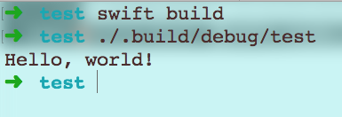

这个系列记录了我正式开始学习React Native的历程与心得,以及一些踩过的坑,本篇将讲述如何用Swift写一个命令行工具,一行命令启动安卓和iOS的模拟器
Why
由于本人是做iOS开发,对安卓的IDE及机制知之甚少,在做RN开发的时候,每次想要启动安卓模拟器的时候,都需要先打开Android Studio这个笨重的IDE,然后Run一下,甚是麻烦,因此,就想到了写一个CommandLineTool,一行命令启动安卓和iOS的模拟器,归根到底还是因为”懒”.
How
不废话了,开始搞:
You need:
- Swift开发环境,不想多说,如果你是iOS开发者,那么你一定有Xcode,Xcode自带Swift开发环境;当然,如果你不是iOS开发者,又对Swift很感兴趣,那么你可以从这里开始
- Swift 语法基础和一些iOS开发的经验.
- 对Mac OS / Unix操作系统有一些简单的了解,以及会敲一些简单的终端命令.
Action:
- 打开你的Terminal,cd到适当的目录下,键入
swift package init --type executable,即使用swift package manager(后面简称SPM)初始化一个可执行的swift包. - 该命令会给我们生成一个可以运行的swift package,其中包括
Package.swift,程序入口main.swift,.gitignore以及测试文件夹Tests.
- 运行一下看看:首先,先
swift build编译一下,该命令会给我们生成一个可执行文件,位置在./.build/debug/test,我们执行一下看看:
